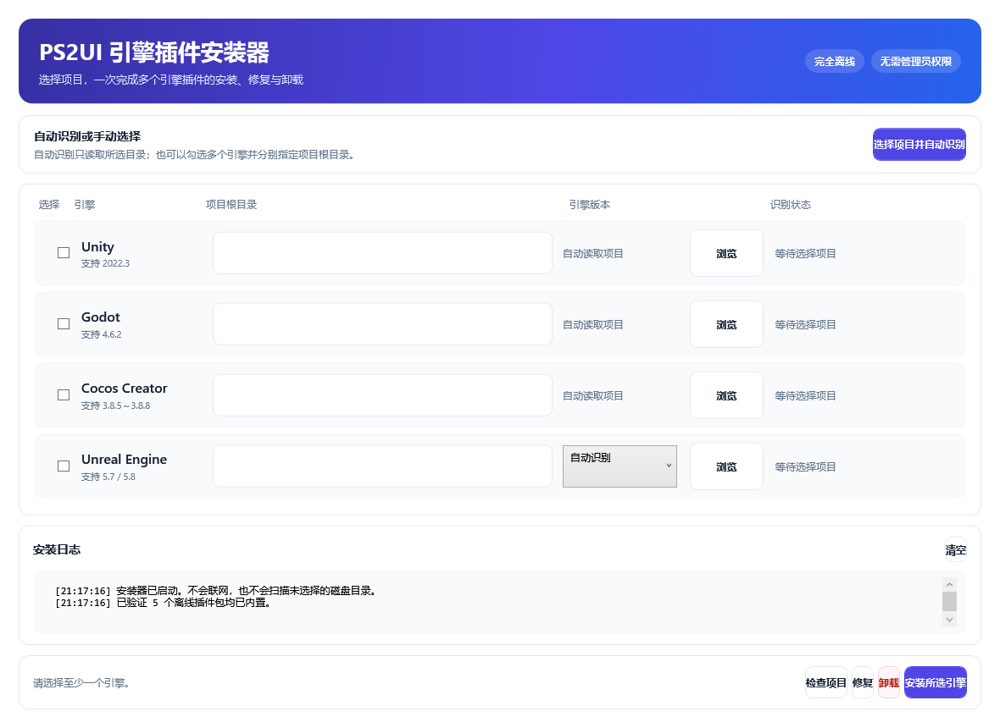
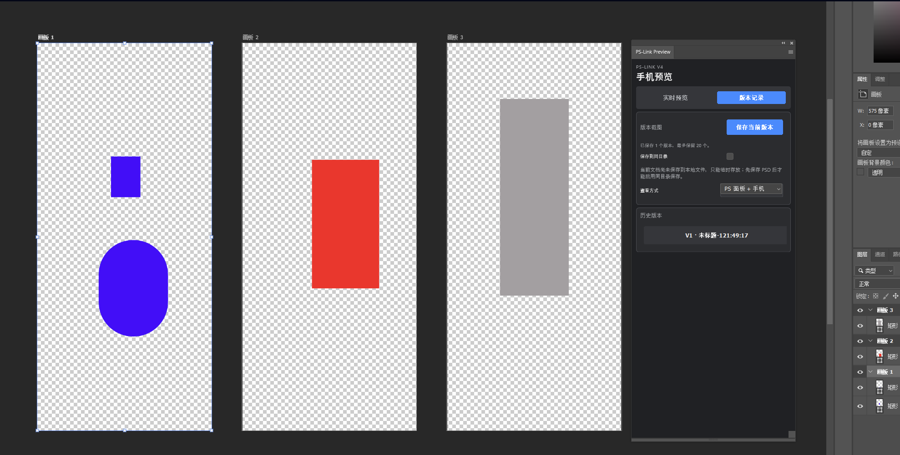
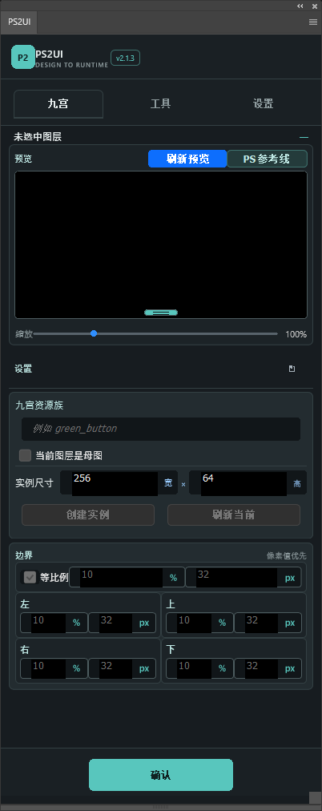
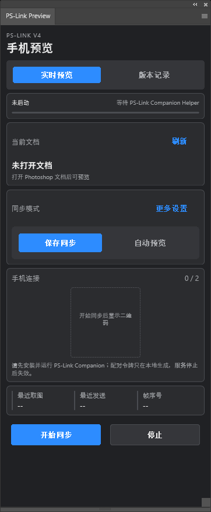

跨引擎 UI 工作流2.1.4
PS2UI
从 Photoshop 导出统一 UI Package，并通过安装器接入 Unity、Godot、Cocos Creator 和 Unreal Engine。
查看产品与下载


PRODUCTS
每个产品都有独立介绍、清晰版本和直接下载入口。PS2UI 使用独立产品站，其余工具在本站查看。

从 Photoshop 导出统一 UI Package，并通过安装器接入 Unity、Godot、Cocos Creator 和 Unreal Engine。
查看产品与下载


BEYOND THE TOOLBOX
访问 Inspiration，查看更多视觉内容与创作方向。